Explore Nepal Through Its Food
Nepalese cuisine is as diverse as its landscapes and cultures. From the momos of the Himalayan regions to the spicy curries of the Terai plains, food in Nepal tells the story of its people, geography, and history. Influenced by neighboring countries like India, Tibet, and China, yet distinctly its own, Nepalese food offers a unique culinary adventure for travelers seeking authentic flavors.
Popular Nepalese Dishes
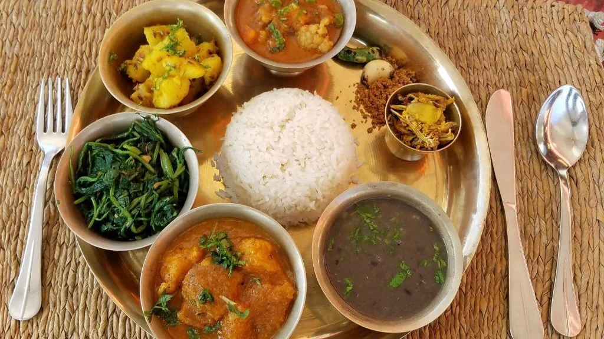
Dal Bhat
The national dish of Nepal consisting of steamed rice, lentil soup, and various curries and pickles. This complete meal is the staple food for most Nepali people and is typically eaten twice a day.
Learn More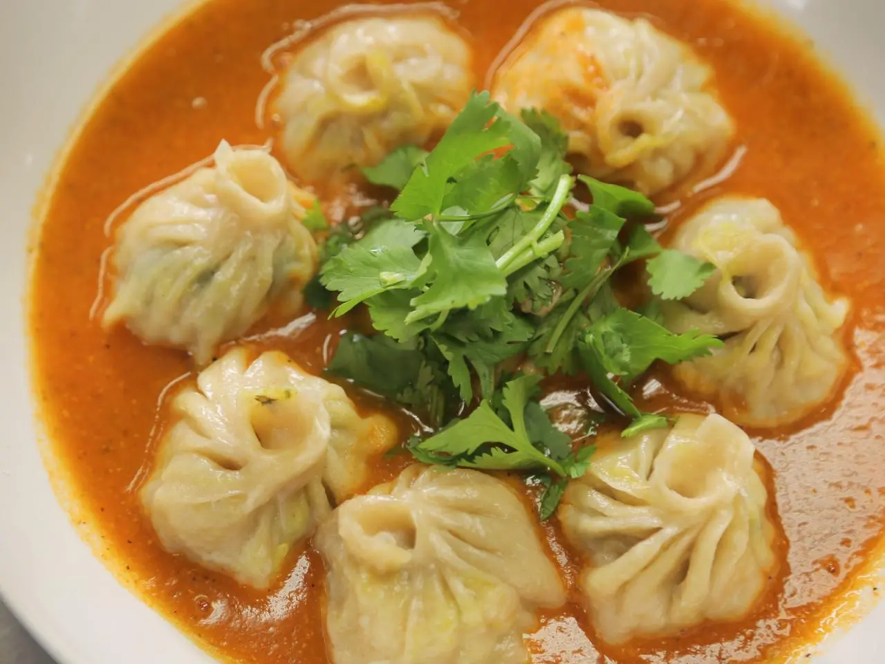
Momos
These steamed or fried dumplings are stuffed with seasoned meat or vegetables and served with spicy dipping sauce. Originally from Tibet, momos have become one of Nepal's most beloved street foods.
Learn More
Sel Roti
A traditional homemade sweet rice bread that's ring-shaped and crispy on the outside, soft inside. Often prepared during festivals like Tihar and Dashain, this delicacy has deep cultural significance.
Learn More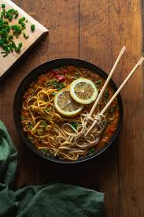
Thukpa
A hearty noodle soup with vegetables and meat, popular in the Himalayan regions. This warming dish is perfect for cold mountain days and showcases the Tibetan influence on Nepalese cuisine.
Learn More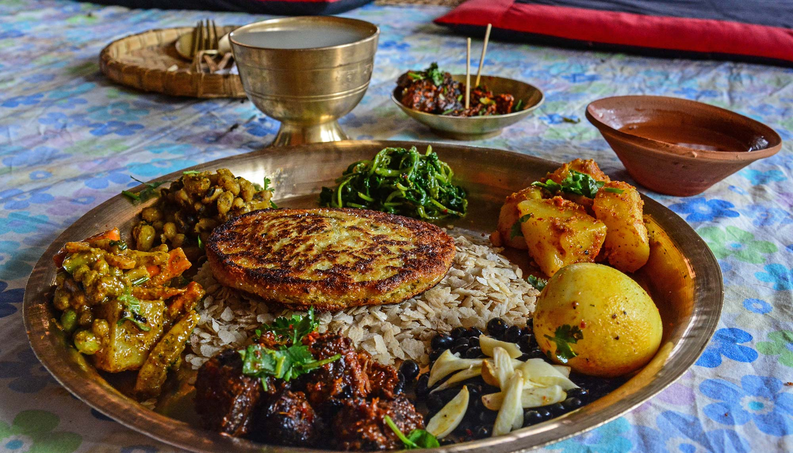
Newari Khaja Set
A traditional feast from the Newari community featuring beaten rice, spicy meat, soybeans, and various small dishes. This elaborate meal showcases the sophisticated culinary traditions of Kathmandu Valley.
Learn More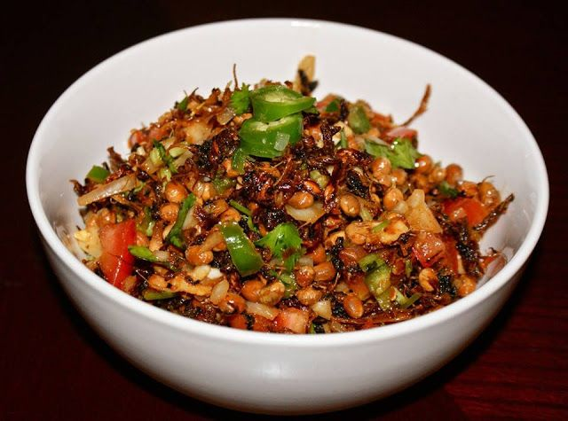
Gundruk
A fermented leafy green vegetable that is one of Nepal's national dishes. Often made into soup or pickle, gundruk is rich in nutrients and represents Nepal's tradition of food preservation.
Learn MoreRegional Cuisines of Nepal
Himalayan Region Cuisine
The cuisine of Nepal's northern mountain regions is heavily influenced by Tibetan culture. The harsh climate and limited agriculture have shaped a diet rich in barley, buckwheat, and dairy products. Popular dishes include:
- Tsampa: Roasted barley flour, often mixed with butter tea
- Thukpa: Hearty noodle soup with vegetables and meat
- Sha Phaley: Fried bread stuffed with seasoned meat
- Butter Tea: Salty tea mixed with yak butter, providing necessary calories for high-altitude living
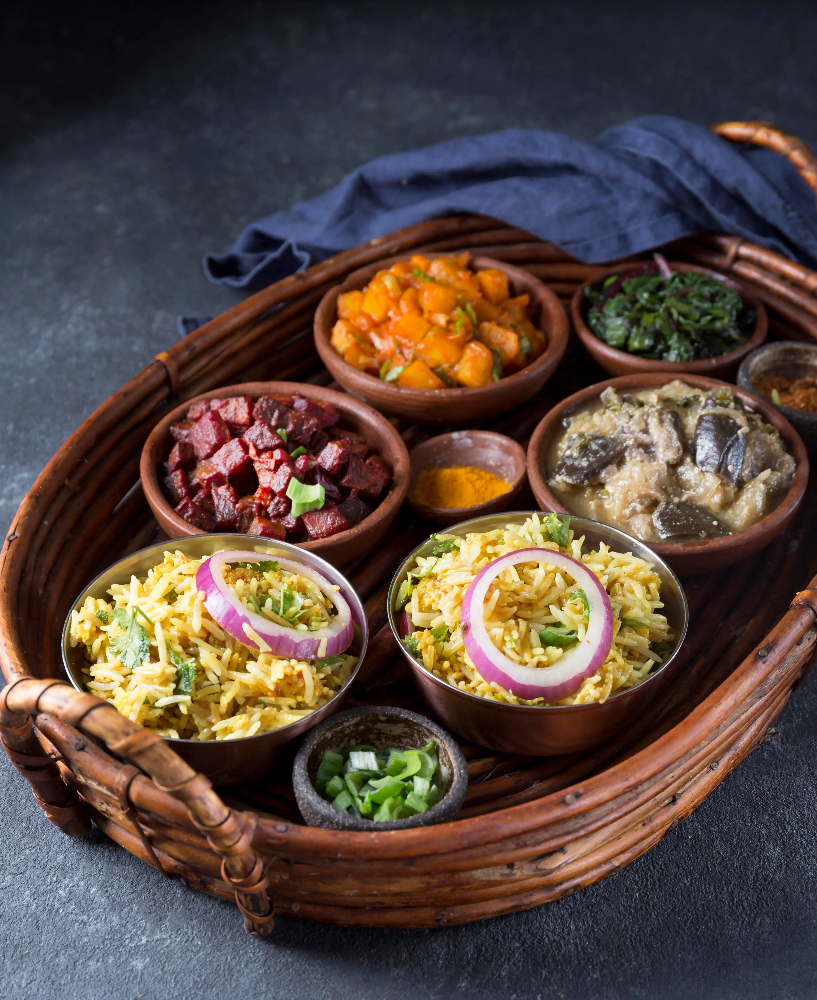
Kathmandu Valley Cuisine
The indigenous Newari community of Kathmandu Valley has one of Nepal's most sophisticated culinary traditions. Their cuisine features complex flavors, intricate preparation methods, and numerous festive dishes:
- Yomari: Steamed rice flour dumplings with sweet fillings
- Choila: Spicy grilled meat, typically buffalo or chicken
- Bara: Lentil pancakes often topped with an egg
- Juju Dhau: "King of yogurts" - a rich, creamy yogurt made in Bhaktapur
Terai Region Cuisine
The southern plains of Nepal share culinary traditions with northern India. The fertile land allows for abundant rice cultivation and a variety of vegetables. The cuisine here tends to be:
- Dhido: A thick porridge made from millet or buckwheat flour
- Fish Curry: Various freshwater fish prepared with local spices
- Ghonghi: Edible snails cooked in a spicy sauce
- Bagiya: Rice flour cakes steamed in leaves
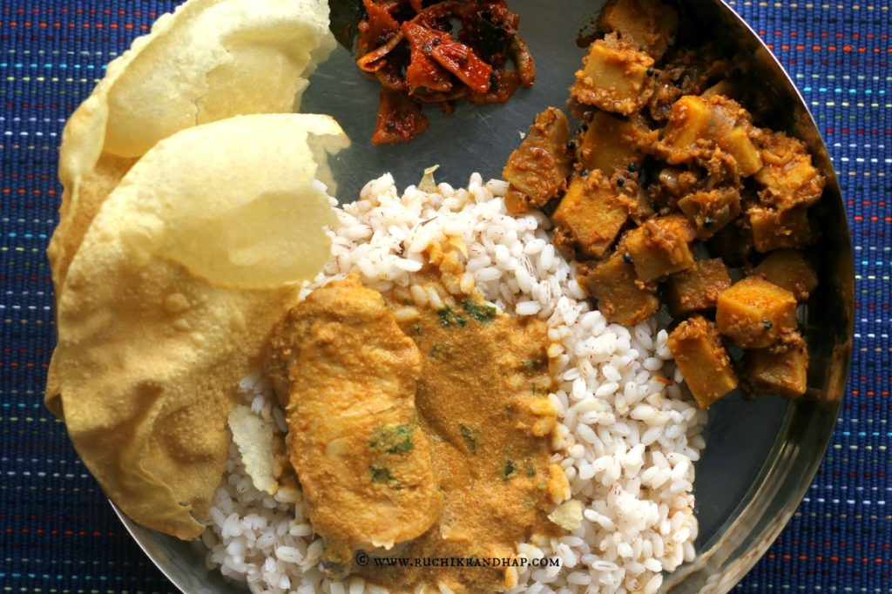
Essential Ingredients
Nepalese cuisine uses a distinctive set of spices and ingredients that give it its unique flavor profile:
Jimbu
A herb native to the Himalayan region that adds a unique flavor similar to onion and chives.
Timur
Nepali pepper with a citrusy, numbing quality similar to Sichuan pepper.
Ghee
Clarified butter used for cooking and religious purposes.
Mustard Oil
The primary cooking oil in many Nepalese dishes, adding a distinctive pungent flavor.
Cumin
Essential spice in many Nepalese dishes, especially in curries and lentils.
Achar
Spicy pickles made from various vegetables, fruits, or meats.
Yak Cheese
Hard cheese from the Himalayan regions, providing protein and nutrients.
Buckwheat
Important grain in higher elevations where rice cannot be grown.
Food & Festivals
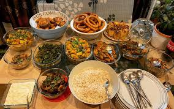
Dashain
Nepal's biggest festival features special foods like goat curry, sel roti (sweet rice bread rings), and various meat dishes. Families gather for feasts that last several days, with special emphasis on meat dishes that are only prepared during this auspicious time.
During Dashain, kitchen activities increase dramatically as women prepare elaborate dishes and sweets. The festival is also associated with jamara (barley sprouts) that are used in religious ceremonies.
Learn About Dashain
Tihar
Also known as the festival of lights, Tihar celebrations include preparing sel roti, various milk-based sweets, and traditional treats like anarsa (rice flour cookies). Each day of this five-day festival has specific food offerings associated with it.
Sweets play an important role in Tihar, with families exchanging homemade delicacies as gifts. The preparation of these traditional sweets is itself considered a sacred activity.
Learn About Tihar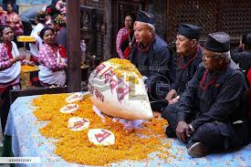
Yomari Punhi
A Newari festival celebrating the end of the rice harvest, centered around yomari - a steamed dumpling with sweet fillings made from rice flour. The unique fish-shaped dumplings are filled with molasses and sesame seeds or khuwa (condensed milk).
Making yomari is considered an art, with the shape representing the fish of abundance and prosperity. Families gather to make these treats together, passing down traditional techniques through generations.
Learn About Yomari PunhiNepalese Food Culture
Eating Customs & Etiquette
▼Traditional Nepalese eating customs include:
- Eating with the right hand, as the left is considered unclean
- Sitting cross-legged on the floor around low tables or mats
- Washing hands before and after meals
- Taking food from communal plates with the fingers or personal spoons
- In traditional households, men eat first, followed by women and children
- Declining food at least once before accepting (as a sign of politeness)
Religious Food Practices
▼Food practices in Nepal are deeply influenced by religious beliefs:
- Many Hindus avoid beef as cows are considered sacred
- Buddhist practitioners may follow vegetarian diets, especially during religious ceremonies
- Fasting is common during religious festivals and certain days of the week
- Prasad (blessed food) is distributed after religious ceremonies
- Certain foods are prepared exclusively for religious offerings
Cooking Methods
▼Traditional Nepalese cooking methods include:
- Cooking over wood fires using clay or metal stoves
- Pressure cooking for lentils and beans
- Fermentation for preserving vegetables (like gundruk)
- Sun-drying meat, vegetables, and fruits for preservation
- Steaming in leaves or special vessels (for momos and other dumplings)
- Using grinding stones to prepare spice mixtures
Street Food Culture
▼Nepal has a vibrant street food scene, especially in urban areas:
- Momos (dumplings) stalls are ubiquitous in cities
- Chatamari (Newari rice pizzas) served from small food carts
- Samosas and other fried snacks are popular afternoon treats
- Lassi (yogurt drink) stalls during hot weather
- Pani puri and chaat influenced by Indian street food
- Seasonal specialties like boiled corn, roasted sweet potatoes, and fresh sugarcane juice
Traditional Beverages
Chiya
Spiced milk tea similar to Indian chai, flavored with cardamom, cinnamon, and other spices. This ubiquitous drink is served throughout the day in Nepal.
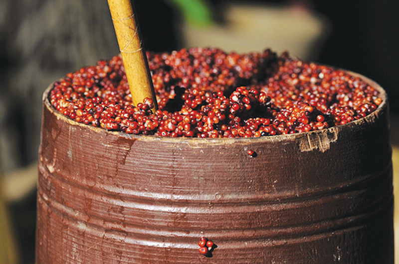
Tongba
A warm millet beer consumed primarily in eastern Nepal and among Limbu communities. Fermented millet is placed in a container and hot water is added.
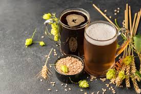
Raksi
A strong home-brewed distilled alcohol made from millet or rice. Often served during special occasions and festivals.
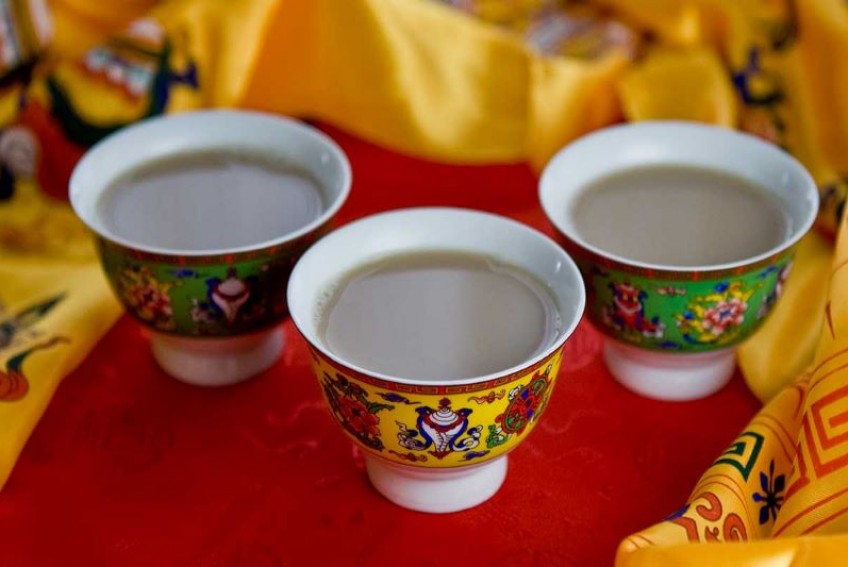
Butter Tea
Popular in the Himalayan regions, this tea is made with yak butter and salt, providing necessary calories for high-altitude living.
Ready to Experience Nepalese Cuisine?
Whether you're planning a trip to Nepal or looking to explore new flavors at home, Nepalese food offers a delightful and enriching experience. Find local Nepalese restaurants or try cooking some of these dishes yourself!
Find a Local Restaurant Explore Recipes